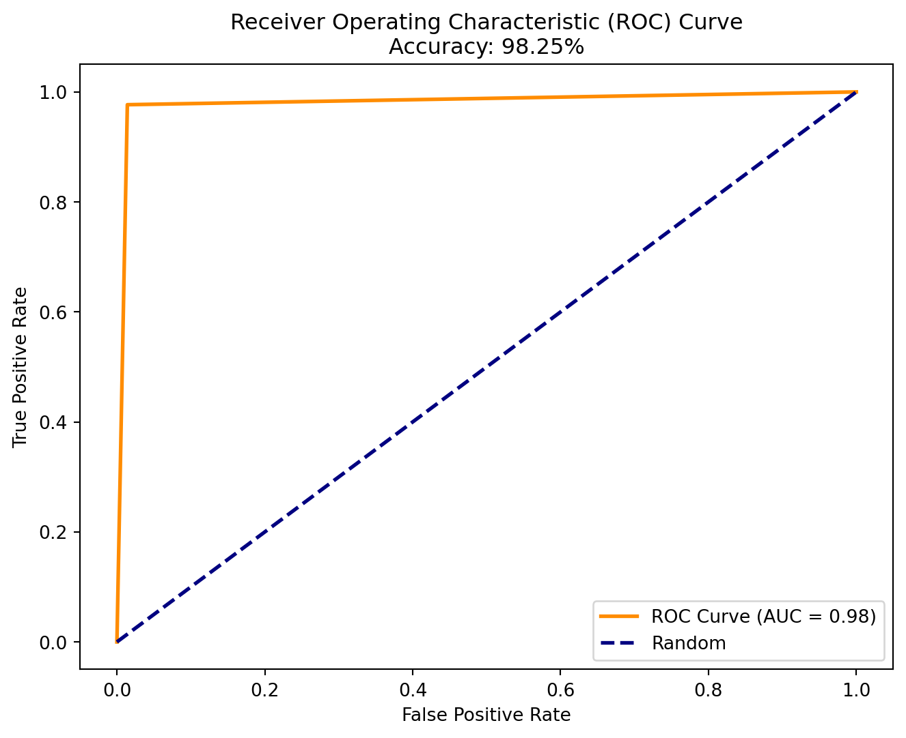

import pandas as ___
import numpy as ___
import seaborn as ___
import matplotlib.pyplot as ___
import statsmodels.api as __
import statsmodels.formula.api as ___
# Import from sklearn
from sklearn.model_selection import ___
from sklearn.preprocessing import ____
from sklearn.decomposition import ___
from sklearn.linear_model import ___
from sklearn.pipeline import Pipeline
from sklearn.metrics import accuracy_score, roc_curve, auc
from sklearn.feature_selection import SelectKBest, f_classif
# Import display from IPython to allow display of plots in notebook
from IPython.display import displayPython Logistic Regression Demo
Links
Cancer Dataset
Download Follow Along File
Welcome to session 4!
In this session, we are going to walk through data cleaning, visualization and two different ways of building a logistic regression model.
We are using the same dataset as in session 3! There is no need to re-download it!
Click on the ‘Download Follow Along File’ link above or visit the ‘files’ tab on the teams page to get the follow along file for this session. There is a jupyter notebook option and a quarto option. Please choose whichever you are comfortable with!
Getting Started
Before doing anything else, we should first activate the conda environment we want to use. If you created the ‘python-intro-env’ environment, please use that.Refresher: How to activate conda environment
From terminal, type:
> conda activate ENVNAME
When in VS code, you might get a popup message like the one below, confirming that the environment was activated:
Selected conda environment was successfully activated, even though “(ENVNAME)” indicator may not be present in the terminal prompt.
or
In Anaconda Navagator, click on the Environments tab on the left and select the environment you want to activate. Just selecting the environment should activate it.Refresher: How to install packages
To install packages, we can either use the “anaconda” dashboard, or we can use the command line. Make sure your environment is active before installing packages or the packages will not be available in your environment.
To install from the command line, we open a terminal and type:
> conda install {package}
or
> pip install {package}
If you are using the ‘python-intro-env’ environment, you may need to install the ‘statsmodels’ package if you have not already installed it.
Statsmodels can be installed via conda install so:
> conda install statsmodels
Checking installed packages
If we want to make sure we have the packages we’ll need installed in the environment before we try to import them, we can either check on anaconda or use the terminal:
> conda list
Otherwise, we will get an error message if we try to import packages that are not installed.
We can also check for a specific package, like pandas, with `conda list {package}. See example below:> conda list pandas
# packages in environment at C:\…\anaconda3\envs\python-intro-env: # Name Version Build Channel
pandas 2.2.2 py310h5da7b33_0
Now we are ready to get started!
Our goals for this session are:
1. Practice the pandas skills we covered last session
2. Get familiar with plotting in python using seaborn and matplotlib
3. Understand how to create and evaluate models using Statsmodels and scikit-learn
Step 1: Import Packages
Similar to library() in R, we’ll use import in Python. Unlike R, however, python lets you set what ‘nickname’ you want to use for each package. There are some standard conventions for these import statements (like pandas typically being imported as pd) and following them helps make your code more readable.
Fill in the blanks to import the necessary packages:
The answers can be found under the drop down below.
Click to reveal answers
import pandas as pd
import numpy as np
import seaborn as sns
import matplotlib.pyplot as plt
import statsmodels.api as sm
import statsmodels.formula.api as smf
## import from sklearn (scikit-learn)
from sklearn.model_selection import train_test_split
from sklearn.preprocessing import StandardScaler
from sklearn.decomposition import PCA
from sklearn.linear_model import LogisticRegression
from sklearn.pipeline import Pipeline
from sklearn.metrics import accuracy_score, roc_curve, auc
from sklearn.feature_selection import SelectKBest, f_classif
# Import display from IPython to allow display of plots in notebook
from IPython.display import displayStep 2: Read in Data and Perform Data Cleaning
We can use the read_csv() function from the pandas package to read in the dataset.
We can use the .info() function to show some basic information about the dataset like:
* the number of rows
* number of columns
* column labels
* column type
* number of non-null values in each column
Click to reveal answers
<class 'pandas.core.frame.DataFrame'>
RangeIndex: 569 entries, 0 to 568
Data columns (total 33 columns):
# Column Non-Null Count Dtype
--- ------ -------------- -----
0 id 569 non-null int64
1 diagnosis 569 non-null object
2 radius_mean 569 non-null float64
3 texture_mean 569 non-null float64
4 perimeter_mean 569 non-null float64
5 area_mean 569 non-null float64
6 smoothness_mean 569 non-null float64
7 compactness_mean 569 non-null float64
8 concavity_mean 569 non-null float64
9 concave points_mean 569 non-null float64
10 symmetry_mean 569 non-null float64
11 fractal_dimension_mean 569 non-null float64
12 radius_se 569 non-null float64
13 texture_se 569 non-null float64
14 perimeter_se 569 non-null float64
15 area_se 569 non-null float64
16 smoothness_se 569 non-null float64
17 compactness_se 569 non-null float64
18 concavity_se 569 non-null float64
19 concave points_se 569 non-null float64
20 symmetry_se 569 non-null float64
21 fractal_dimension_se 569 non-null float64
22 radius_worst 569 non-null float64
23 texture_worst 569 non-null float64
24 perimeter_worst 569 non-null float64
25 area_worst 569 non-null float64
26 smoothness_worst 569 non-null float64
27 compactness_worst 569 non-null float64
28 concavity_worst 569 non-null float64
29 concave points_worst 569 non-null float64
30 symmetry_worst 569 non-null float64
31 fractal_dimension_worst 569 non-null float64
32 Unnamed: 32 0 non-null float64
dtypes: float64(31), int64(1), object(1)
memory usage: 146.8+ KBFrom the info, we can see that the column types make sense and most of the columns have no missing values.
We do have this extra column called “Unnamed: 32” with 0 non-null values… so let’s drop it (remove it from the dataframe). We can also replace spaces in column names with “_“, which will be useful later.
Click to reveal answers
## `inplace` means that we modify the original dataframe
data.drop(columns="Unnamed: 32", inplace=True)
data.columns = data.columns.str.replace(" ", "_")
## check that the column was removed
print(data.info())<class 'pandas.core.frame.DataFrame'>
RangeIndex: 569 entries, 0 to 568
Data columns (total 32 columns):
# Column Non-Null Count Dtype
--- ------ -------------- -----
0 id 569 non-null int64
1 diagnosis 569 non-null object
2 radius_mean 569 non-null float64
3 texture_mean 569 non-null float64
4 perimeter_mean 569 non-null float64
5 area_mean 569 non-null float64
6 smoothness_mean 569 non-null float64
7 compactness_mean 569 non-null float64
8 concavity_mean 569 non-null float64
9 concave_points_mean 569 non-null float64
10 symmetry_mean 569 non-null float64
11 fractal_dimension_mean 569 non-null float64
12 radius_se 569 non-null float64
13 texture_se 569 non-null float64
14 perimeter_se 569 non-null float64
15 area_se 569 non-null float64
16 smoothness_se 569 non-null float64
17 compactness_se 569 non-null float64
18 concavity_se 569 non-null float64
19 concave_points_se 569 non-null float64
20 symmetry_se 569 non-null float64
21 fractal_dimension_se 569 non-null float64
22 radius_worst 569 non-null float64
23 texture_worst 569 non-null float64
24 perimeter_worst 569 non-null float64
25 area_worst 569 non-null float64
26 smoothness_worst 569 non-null float64
27 compactness_worst 569 non-null float64
28 concavity_worst 569 non-null float64
29 concave_points_worst 569 non-null float64
30 symmetry_worst 569 non-null float64
31 fractal_dimension_worst 569 non-null float64
dtypes: float64(30), int64(1), object(1)
memory usage: 142.4+ KB
NoneThe column was successfully removed!
Now, we can use .head(5) to show the first 5 rows of the dataset (rows 0-4). Remember that the first row is “0” not “1”!
| id | diagnosis | radius_mean | texture_mean | perimeter_mean | area_mean | smoothness_mean | compactness_mean | concavity_mean | concave_points_mean | ... | radius_worst | texture_worst | perimeter_worst | area_worst | smoothness_worst | compactness_worst | concavity_worst | concave_points_worst | symmetry_worst | fractal_dimension_worst | |
|---|---|---|---|---|---|---|---|---|---|---|---|---|---|---|---|---|---|---|---|---|---|
| 0 | 842302 | M | 17.99 | 10.38 | 122.80 | 1001.0 | 0.11840 | 0.27760 | 0.3001 | 0.14710 | ... | 25.38 | 17.33 | 184.60 | 2019.0 | 0.1622 | 0.6656 | 0.7119 | 0.2654 | 0.4601 | 0.11890 |
| 1 | 842517 | M | 20.57 | 17.77 | 132.90 | 1326.0 | 0.08474 | 0.07864 | 0.0869 | 0.07017 | ... | 24.99 | 23.41 | 158.80 | 1956.0 | 0.1238 | 0.1866 | 0.2416 | 0.1860 | 0.2750 | 0.08902 |
| 2 | 84300903 | M | 19.69 | 21.25 | 130.00 | 1203.0 | 0.10960 | 0.15990 | 0.1974 | 0.12790 | ... | 23.57 | 25.53 | 152.50 | 1709.0 | 0.1444 | 0.4245 | 0.4504 | 0.2430 | 0.3613 | 0.08758 |
| 3 | 84348301 | M | 11.42 | 20.38 | 77.58 | 386.1 | 0.14250 | 0.28390 | 0.2414 | 0.10520 | ... | 14.91 | 26.50 | 98.87 | 567.7 | 0.2098 | 0.8663 | 0.6869 | 0.2575 | 0.6638 | 0.17300 |
| 4 | 84358402 | M | 20.29 | 14.34 | 135.10 | 1297.0 | 0.10030 | 0.13280 | 0.1980 | 0.10430 | ... | 22.54 | 16.67 | 152.20 | 1575.0 | 0.1374 | 0.2050 | 0.4000 | 0.1625 | 0.2364 | 0.07678 |
5 rows × 32 columns
Recoding a Variable
For our logistic regression, the diagnosis column, which is our outcome of interest, should be 0, 1 not B, M. To fix this, we can use a dictionary and .map().
We could also use a lambda function like we did in Session 3, but dictionaries can be more convenient if there are more than 2 values to be recoded.
Click to reveal answers
## define a dictionary
y_recode = {"B": 0, "M": 1}
## use .map() to locate the keys in the column and replace with values
## B becomes 0, M becomes 1
data["diagnosis"] = data["diagnosis"].map(y_recode)
data.head(5)| id | diagnosis | radius_mean | texture_mean | perimeter_mean | area_mean | smoothness_mean | compactness_mean | concavity_mean | concave_points_mean | ... | radius_worst | texture_worst | perimeter_worst | area_worst | smoothness_worst | compactness_worst | concavity_worst | concave_points_worst | symmetry_worst | fractal_dimension_worst | |
|---|---|---|---|---|---|---|---|---|---|---|---|---|---|---|---|---|---|---|---|---|---|
| 0 | 842302 | 1 | 17.99 | 10.38 | 122.80 | 1001.0 | 0.11840 | 0.27760 | 0.3001 | 0.14710 | ... | 25.38 | 17.33 | 184.60 | 2019.0 | 0.1622 | 0.6656 | 0.7119 | 0.2654 | 0.4601 | 0.11890 |
| 1 | 842517 | 1 | 20.57 | 17.77 | 132.90 | 1326.0 | 0.08474 | 0.07864 | 0.0869 | 0.07017 | ... | 24.99 | 23.41 | 158.80 | 1956.0 | 0.1238 | 0.1866 | 0.2416 | 0.1860 | 0.2750 | 0.08902 |
| 2 | 84300903 | 1 | 19.69 | 21.25 | 130.00 | 1203.0 | 0.10960 | 0.15990 | 0.1974 | 0.12790 | ... | 23.57 | 25.53 | 152.50 | 1709.0 | 0.1444 | 0.4245 | 0.4504 | 0.2430 | 0.3613 | 0.08758 |
| 3 | 84348301 | 1 | 11.42 | 20.38 | 77.58 | 386.1 | 0.14250 | 0.28390 | 0.2414 | 0.10520 | ... | 14.91 | 26.50 | 98.87 | 567.7 | 0.2098 | 0.8663 | 0.6869 | 0.2575 | 0.6638 | 0.17300 |
| 4 | 84358402 | 1 | 20.29 | 14.34 | 135.10 | 1297.0 | 0.10030 | 0.13280 | 0.1980 | 0.10430 | ... | 22.54 | 16.67 | 152.20 | 1575.0 | 0.1374 | 0.2050 | 0.4000 | 0.1625 | 0.2364 | 0.07678 |
5 rows × 32 columns
Step 3: Exploratory Data Analysis
Now that our data is cleaned and we have our outcome in numeric form, we can use .describe() to get summary statistics for each column of the dataset.
Click to reveal answers
| id | diagnosis | radius_mean | texture_mean | perimeter_mean | area_mean | smoothness_mean | compactness_mean | concavity_mean | concave_points_mean | ... | radius_worst | texture_worst | perimeter_worst | area_worst | smoothness_worst | compactness_worst | concavity_worst | concave_points_worst | symmetry_worst | fractal_dimension_worst | |
|---|---|---|---|---|---|---|---|---|---|---|---|---|---|---|---|---|---|---|---|---|---|
| count | 5.690000e+02 | 569.000000 | 569.000000 | 569.000000 | 569.000000 | 569.000000 | 569.000000 | 569.000000 | 569.000000 | 569.000000 | ... | 569.000000 | 569.000000 | 569.000000 | 569.000000 | 569.000000 | 569.000000 | 569.000000 | 569.000000 | 569.000000 | 569.000000 |
| mean | 3.037183e+07 | 0.372583 | 14.127292 | 19.289649 | 91.969033 | 654.889104 | 0.096360 | 0.104341 | 0.088799 | 0.048919 | ... | 16.269190 | 25.677223 | 107.261213 | 880.583128 | 0.132369 | 0.254265 | 0.272188 | 0.114606 | 0.290076 | 0.083946 |
| std | 1.250206e+08 | 0.483918 | 3.524049 | 4.301036 | 24.298981 | 351.914129 | 0.014064 | 0.052813 | 0.079720 | 0.038803 | ... | 4.833242 | 6.146258 | 33.602542 | 569.356993 | 0.022832 | 0.157336 | 0.208624 | 0.065732 | 0.061867 | 0.018061 |
| min | 8.670000e+03 | 0.000000 | 6.981000 | 9.710000 | 43.790000 | 143.500000 | 0.052630 | 0.019380 | 0.000000 | 0.000000 | ... | 7.930000 | 12.020000 | 50.410000 | 185.200000 | 0.071170 | 0.027290 | 0.000000 | 0.000000 | 0.156500 | 0.055040 |
| 25% | 8.692180e+05 | 0.000000 | 11.700000 | 16.170000 | 75.170000 | 420.300000 | 0.086370 | 0.064920 | 0.029560 | 0.020310 | ... | 13.010000 | 21.080000 | 84.110000 | 515.300000 | 0.116600 | 0.147200 | 0.114500 | 0.064930 | 0.250400 | 0.071460 |
| 50% | 9.060240e+05 | 0.000000 | 13.370000 | 18.840000 | 86.240000 | 551.100000 | 0.095870 | 0.092630 | 0.061540 | 0.033500 | ... | 14.970000 | 25.410000 | 97.660000 | 686.500000 | 0.131300 | 0.211900 | 0.226700 | 0.099930 | 0.282200 | 0.080040 |
| 75% | 8.813129e+06 | 1.000000 | 15.780000 | 21.800000 | 104.100000 | 782.700000 | 0.105300 | 0.130400 | 0.130700 | 0.074000 | ... | 18.790000 | 29.720000 | 125.400000 | 1084.000000 | 0.146000 | 0.339100 | 0.382900 | 0.161400 | 0.317900 | 0.092080 |
| max | 9.113205e+08 | 1.000000 | 28.110000 | 39.280000 | 188.500000 | 2501.000000 | 0.163400 | 0.345400 | 0.426800 | 0.201200 | ... | 36.040000 | 49.540000 | 251.200000 | 4254.000000 | 0.222600 | 1.058000 | 1.252000 | 0.291000 | 0.663800 | 0.207500 |
8 rows × 32 columns
The count column tells us the number of non-null (non-missing) values in a column.
Creating Descriptive Plots
Creating plots in python is similar to using ggplot in R, but there are some syntactic differences. The two most popular plotting packages in python are matplotlib and seaborn.
Matplotlib is a low-level plotting package, and seaborn is built on top of it. Therefore, you can use many matplotlib methods with seaborn plot objects.
Building a plot
When building a plot in python, you start with a ‘figure’ object and an ‘axis’ object.
Data is plotted onto ‘axis’ objects. Axis objects sit on top of figure objects, which can be saved to variables and displayed later.
Things like titles and legends are also associated with the ‘axis’ object, not the ‘figure’ object.
You can create figures using plt.figure(), with additional arguments for things like figure size. Then, you can add an axis object to the figure using fig.add_subplot().
Example: Building a count plot of diagnoses using seaborn
We can look at the number of each diagnosis reflected in the dataset in a plot using seaborn.
To do this, we can first construct our ‘figure’ and ‘axis’ objects.
Then, we can create our ‘count plot’, which is similar to a barplot in ggplot, and assign it to the ‘axis’ object we just made.
We can also set the title of the axis object using the .set_title() method.
If we want to display the plot, we have to use display() if we are working with a quarto document or a jupyter notebook. If we are working with a regular python script, we use fig.show().
Changing plot attributes
If we want, we can change the colors of the plot. To make the plot a bit more useful, we can also change the y-scale from “count” to “percentage” and add labels so it is clear what “0” and “1” mean.
To help us pick colors, we can use sns.color_palette() which will display an image with the colors in the palette.
To change the colors of our plot, we can make a dictionary with the values of ‘diagnosis’ as keys and the hexcodes of the colors we want to use as values.
We can get the hex codes of colors from a seaborn palette using sns.color_palette().as_hex().
color_hex = sns.color_palette("colorblind")._____
print("The hexcodes for the 'colorblind' palette are:\n", ____)
## if we want to make the columns green for benign and yellow for malignant
## the "-" lets us index from the end of the list rather than the front. However, the '-1'th position is the last position (there is no '-0')
colors = {0: color_hex[__], 1: color_hex[__]}Click to reveal answers
color_hex = sns.color_palette("colorblind").as_hex()
print("The hexcodes for the 'colorblind' palette are:\n", color_hex)
## if we want to make the columns green for benign and yellow for malignant
## the "-" lets us index from the end of the list rather than the front.However, the '-1'th position is the last position (there is no '-0')
colors = {0: color_hex[2], 1: color_hex[-2]}The hexcodes for the 'colorblind' palette are:
['#0173b2', '#de8f05', '#029e73', '#d55e00', '#cc78bc', '#ca9161', '#fbafe4', '#949494', '#ece133', '#56b4e9']We then create the plot and tell seaborn to use ‘colors’ as the palette for the graph. We can also change the ‘stat’ to be “percent”, which can be more interpretable than raw counts.
We can also change the xtick labels to be “Benign” and “Malignant” instead of “0” and “1”.
We will also change the axis labels and set a title. Once we make these changes, we can show the finished plot.
fig2 = plt.figure()
ax2 = fig2.add_subplot()
sns.countplot(
x="___", hue="___", stat="___", data=data, palette=colors, legend=False, ax=ax2
)
## change the xticklabels to benign and malignant
ax2.set_xticks([0, 1])
ax2.set_xticklabels(["___", ""])
## change the axes labels and title
ax2.set(xlabel="___", ylabel="___", title="Distribution of Diagnoses")
## add legend
ax2.legend(title="Diagnosis", loc="upper right", labels=["Benign", "Malignant"])
display(fig2)Click to reveal answers
fig2 = plt.figure()
ax2 = fig2.add_subplot()
sns.countplot(
x="diagnosis",
hue="diagnosis",
stat="percent",
data=data,
palette=colors,
legend=False,
ax=ax2,
)
## change the xticklabels to benign and malignant
ax2.set_xticks([0, 1])
ax2.set_xticklabels(["Benign", "Malignant"])
## change the axes labels and title
ax2.set(xlabel="Diagnosis", ylabel="Percent", title="Distribution of Diagnoses")
## add legend
ax2.legend(title="Diagnosis", loc="upper right", labels=["Benign", "Malignant"])
## show plot
display(fig2)
plt.close(fig2)Correlation Heatmap
If we wanted to, we could also make a correlation heatmap of our features using .corr() and sns.heatmap().
For this, all of our columns must be numeric, and we should remove the ‘id’ column as it is not useful for correlation. We use .select_dtypes() to select only the numeric columns from the dataset.
## set figure size
fig3 = plt.figure(figsize=(20, 20))
ax3 = fig3.add_subplot()
numeric_data = data.select_dtypes(include=___)
## drop id column
numeric_data.drop(columns=___, inplace=___)
## use corr function and seaborn heatmap to create correlation heatmap
## 'fmt' allows us to choose the number display format for the heatmap
sns.heatmap(numeric_data.___, annot=True, fmt=".2f", cmap="coolwarm", ax=ax3)
## set plot title and show plot
ax3.set_title("Feature Correlation Heatmap")
display(fig3)Click to reveal answers
fig3 = plt.figure(figsize=(20, 20))
ax3 = fig3.add_subplot()
numeric_data = data.select_dtypes(include=[np.number])
## drop id column
numeric_data.drop(columns="id", inplace=True)
## use corr function and seaborn heatmap to create correlation heatmap
## 'fmt' allows us to choose the number display format for the heatmap
sns.heatmap(numeric_data.corr(), annot=True, fmt=".2f", cmap="coolwarm", ax=ax3)
## set plot title and show plot
ax3.set_title("Feature Correlation Heatmap")
display(fig3)
plt.close(fig3)Step 4: Creating a Logistic Regression Model
Here we will explore two methods for creating a logistic regression model. The first, statsmodels, is more similar to R and is more user-friendly for statistical purposes. The second, scikit-learn, is more useful for machine learning and prediction models, but is a framework that is worth learning if you are going to use python often.
Method 1: Statsmodels
The statsmodels package is a python package for creating statistical models, conducting tests and performing data exploration. It is similar to packages used in R and creates an r-like model summary.
If we wanted to see if higher values of area_mean and texture_mean are associated with increased odds of malignancy, we can use smf.logit() to fit a logistic regression model.
Click to reveal answers
Optimization terminated successfully.
Current function value: 0.253932
Iterations 8
Logit Regression Results
==============================================================================
Dep. Variable: diagnosis No. Observations: 569
Model: Logit Df Residuals: 566
Method: MLE Df Model: 2
Date: Tue, 19 Nov 2024 Pseudo R-squ.: 0.6154
Time: 10:54:34 Log-Likelihood: -144.49
converged: True LL-Null: -375.72
Covariance Type: nonrobust LLR p-value: 3.776e-101
================================================================================
coef std err z P>|z| [0.025 0.975]
--------------------------------------------------------------------------------
Intercept -12.2437 1.151 -10.634 0.000 -14.500 -9.987
area_mean 0.0120 0.001 10.172 0.000 0.010 0.014
texture_mean 0.2115 0.037 5.745 0.000 0.139 0.284
================================================================================Aside: We can also use feature selection tools from the scikit-learn package to select what features to use.
Scikit learn requires the outcome and predictor variables to be split into two data frames.
from sklearn.feature_selection import SelectKBest, f_classif
X_raw = data.loc[:, "radius_mean"::]
## set only the diagnosis column as "y"
y = data.loc[:, "diagnosis"]
# Select top k features based on ANOVA F-value between feature and target
selector = SelectKBest(f_classif, k=5) # Choose 'k' to specify number of features
X_selected = selector.fit_transform(X_raw, y)
selected_feature_names = X_raw.columns[selector.get_support()]
## make model eqn
formula = "diagnosis ~" + "+".join(selected_feature_names)
sm_model = smf.logit(formula, data=data).fit()
print(sm_model.summary())Optimization terminated successfully.
Current function value: 0.109447
Iterations 10
Logit Regression Results
==============================================================================
Dep. Variable: diagnosis No. Observations: 569
Model: Logit Df Residuals: 563
Method: MLE Df Model: 5
Date: Tue, 19 Nov 2024 Pseudo R-squ.: 0.8343
Time: 10:54:34 Log-Likelihood: -62.275
converged: True LL-Null: -375.72
Covariance Type: nonrobust LLR p-value: 3.129e-133
========================================================================================
coef std err z P>|z| [0.025 0.975]
----------------------------------------------------------------------------------------
Intercept -18.7401 2.741 -6.836 0.000 -24.113 -13.367
perimeter_mean -0.2537 0.073 -3.465 0.001 -0.397 -0.110
concave_points_mean 66.7337 22.129 3.016 0.003 23.362 110.105
radius_worst 1.8164 0.545 3.336 0.001 0.749 2.884
perimeter_worst 0.0651 0.081 0.802 0.422 -0.094 0.224
concave_points_worst 17.8708 11.007 1.624 0.104 -3.703 39.445
========================================================================================
Possibly complete quasi-separation: A fraction 0.21 of observations can be
perfectly predicted. This might indicate that there is complete
quasi-separation. In this case some parameters will not be identified.Method 2: Scikit-learn
The scikit-learn package is geared towards machine-learning and prediction-related tasks like classification, clustering and dimensionality reduction.
Fitting models with scikit-learn is a bit more complex than with statsmodels but is more along the lines of what most python projects will require.
Instead of fitting a logistic regression model on the full dataset like we did with statsmodels, this time we are going to fit on a subset of our data and create a prediction model. We will test this prediction model on the remainder of the dataset.
Splitting Training and Test Data
To fit a prediction model with sci-kit learn…
We first need to split the dataset into X (predictors/features) and y (outcomes). Then we use the train_test_split() function to split these datasets into a training dataset and a test dataset.
We use the .loc function and “:” to select all rows and any columns including and after “radius_mean”, and we assign these columns to x. This excludes the “diagnosis” and “id” columns.
We set y as simply the diagnosis column.
When splitting our dataset, we can define ‘test_size’ which is the proportion of the data that will be set aside for testing the model. We can also set a random_state.
Unlike R, Python allows for multi-argument returns from functions. This lets us assign each returned object to a different variable to be used later!
X = data.loc[:, "___"::]
## set only the diagnosis column as "y"
y = data.loc[:, "___"]
## here we assign each object returned from `train_test_split` to a different variable
## we can use test_size to set the proportion of the dataset reserved for testing
X_?, X_?, y_?, y_? = train_test_split(
X, y, test_size=0.2, random_state=42
)
X_train.head(3)Click to reveal answers
X = data.loc[:, "radius_mean"::]
## set only the diagnosis column as "y"
y = data.loc[:, "diagnosis"]
## here we assign each object returned from `train_test_split` to a different variable
X_train, X_test, y_train, y_test = train_test_split(
X, y, test_size=0.2, random_state=42
)
X_train.head(3)| radius_mean | texture_mean | perimeter_mean | area_mean | smoothness_mean | compactness_mean | concavity_mean | concave_points_mean | symmetry_mean | fractal_dimension_mean | ... | radius_worst | texture_worst | perimeter_worst | area_worst | smoothness_worst | compactness_worst | concavity_worst | concave_points_worst | symmetry_worst | fractal_dimension_worst | |
|---|---|---|---|---|---|---|---|---|---|---|---|---|---|---|---|---|---|---|---|---|---|
| 68 | 9.029 | 17.33 | 58.79 | 250.5 | 0.10660 | 0.14130 | 0.31300 | 0.04375 | 0.2111 | 0.08046 | ... | 10.31 | 22.65 | 65.50 | 324.7 | 0.14820 | 0.4365 | 1.2520 | 0.17500 | 0.4228 | 0.1175 |
| 181 | 21.090 | 26.57 | 142.70 | 1311.0 | 0.11410 | 0.28320 | 0.24870 | 0.14960 | 0.2395 | 0.07398 | ... | 26.68 | 33.48 | 176.50 | 2089.0 | 0.14910 | 0.7584 | 0.6780 | 0.29030 | 0.4098 | 0.1284 |
| 63 | 9.173 | 13.86 | 59.20 | 260.9 | 0.07721 | 0.08751 | 0.05988 | 0.02180 | 0.2341 | 0.06963 | ... | 10.01 | 19.23 | 65.59 | 310.1 | 0.09836 | 0.1678 | 0.1397 | 0.05087 | 0.3282 | 0.0849 |
3 rows × 30 columns
Scaling/Normalizing Data
Because all of our features have different scales, we need to standardize (normalize) our dataset. We can do this by creating an instance of the StandardScaler class called “scaler” and fitting that to the training data. We then use the same “scaler” to scale the test dataset.
After scaling the data, we can perform dimensional reduction with PCA
PCA is often used for dimensional reduction with machine learning methods so we will demonstrate it here. We can set up the PCA transformer in the same way that we set the scaler above.
We can get an idea of how well our PCA factors represent our data
To do this, we can make a plot of the cumulative explained variance.
If we just want to make a quick plot that we do not plan on displaying multiple times, we can skip explicitly setting figure and axis objects.
Here we use plt.plot() from matplotlib to create a plot of the cumulative explained variance. We can use plt.xlabel() and plt.ylabel() in the same code chunk to set the labels for this plot.
If we try to set the labels in a later chunk, we will get a blank plot.
Step 5: Model Setup
Next we have to set up the model itself by creating an instance of the LogisticRegression model class.
Then, we can fit this model to the training data.
Click to reveal answers
LogisticRegression()In a Jupyter environment, please rerun this cell to show the HTML representation or trust the notebook.
On GitHub, the HTML representation is unable to render, please try loading this page with nbviewer.org.
LogisticRegression()
Step 6: Look At Results
Once the model is fit, we can use it to predict the outcome (diagnosis) based on the features of the test data.
Store Results in a Dataframe
We can use pd.DataFrame() to create an empty pandas dataframe that we can fill with our results.
## use model to predict test data
## set up dataframe to review results
results = pd.___
## get predicted
results.loc[:, "Predicted"] = lr.___(___)
## get true y values for test dataset
results.loc[:, "Truth"] = ___.___
## get probability of being malignant
## the output is one probability per outcome, we only want the second outcome (malignant)
results.loc[:, "Probability: Malignant"] = pd.DataFrame(lr.___(X_test_pca))[_]
results.head(5)Click to reveal answers
## use model to predict test data
## set up dataframe to review results
results = pd.DataFrame()
## get predicted
results.loc[:, "Predicted"] = lr.predict(X_test_pca)
## get true y values for test dataset
results.loc[:, "Truth"] = y_test.values
## get probability of being malignant
## the output is one probability per outcome, we only want the second outcome (malignant). The second outcome uses index 1
results.loc[:, "Probability: Malignant"] = pd.DataFrame(lr.predict_proba(X_test_pca))[1]
results.head(5)| Predicted | Truth | Probability: Malignant | |
|---|---|---|---|
| 0 | 0 | 0 | 0.098966 |
| 1 | 1 | 1 | 0.999987 |
| 2 | 1 | 1 | 0.997340 |
| 3 | 0 | 0 | 0.000974 |
| 4 | 0 | 0 | 0.000056 |
We can also get a quantitative “accuracy score” that will give us an idea of how well our model predicts our outcomes.
Create ROC curve
As a figure, we can create an ROC curve and use quarto chunk options to add a figure caption.
Like we did for the cumulative variance plot, this time we will skip setting up named figure and axis objects. Instead, we will first create a ‘working figure’ of size 8x6 and add plots on top of that. Any ‘plt.plot()’ instances we create in this chunk will be overlayed on the working figure object.
If we were working in a python script rather than a quarto document, we would need to use plt.show() at the end to display the figure.
## make a plot to vizualize the ROC curve
## get false pos rate, true pos rate and thresholds
## there are 3 outputs so we need 3 variables to catch them
___, ___, ___ = roc_curve(results["Truth"], results["Predicted"])
## get AUC data
roc_auc = auc(___, ___)
## set up plot
plt.figure(figsize=(8, 6))
## using matplotlib this time, create line plot with 2pt line weight
## add "ROC Curve (AUC = AUC)" as label for orange line
## .2f is for display formatting, lw is linewidth
plt.plot(__, __, color="darkorange", lw=2, label=f"ROC Curve (AUC = {roc_auc:.2f})")
## create another curve, this time blue with a dashed line labeled "Random"
## as in random chance.
plt.plot([0, 1], [0, 1], color="navy", lw=2, linestyle="--", label="Random")
## add xlabel, ylabel and title
plt.xlabel("False Positive Rate")
plt.ylabel("True Positive Rate")
plt.title(
"Receiver Operating Characteristic (ROC) Curve\nAccuracy: {:.2f}%".format(
accuracy * 100
)
)
## add legend and show plot
plt.legend(loc="lower right")Click to reveal answers
## make a plot to vizualize the ROC curve
## get false pos rate, true pos rate and thresholds
fpr, tpr, thresholds = roc_curve(results["Truth"], results["Predicted"])
## get AUC data
roc_auc = auc(fpr, tpr)
## set up plot
plt.figure(figsize=(8, 6))
## using matplotlib this time, create line plot with 2pt line weight
## add "ROC Curve (AUC = AUC)" as label for orange line
## .2f is for display formatting, lw is linewidth
plt.plot(fpr, tpr, color="darkorange", lw=2, label=f"ROC Curve (AUC = {roc_auc:.2f})")
## create another curve, this time blue with a dashed line labeled "Random"
## as in random chance
plt.plot([0, 1], [0, 1], color="navy", lw=2, linestyle="--", label="Random")
## add xlabel, ylabel and title
plt.xlabel("False Positive Rate")
plt.ylabel("True Positive Rate")
plt.title(
"Receiver Operating Characteristic (ROC) Curve\nAccuracy: {:.2f}%".format(
accuracy * 100
)
)
## add legend and show plot
plt.legend(loc="lower right")
Create a Statsmodels-like model and summary with scikit-learn and statsmodels
It is also possible to fit a model with scikit-learn, extract the coefficients, and use them to create a statsmodels model and summary.
Typically, you would want to pick which package (sklearn or statsmodels) you want to use and stick with it, but this is an option if necessary. Note: I am showing Lasso here as well because statsmodels will fail if there are highly correlated features like with this dataset, however this same method can be used on a scikit-learn logistic regression model without Lasso penalties.
This time, we are going to fit on the full data.
First, we can select features to use for model (statsmodels does not perform regularization and therefore will fail to converge when there are highly correlated features). Scikit-learn gives us multiple ways to do this. Let’s use LASSO.
## scale X
X_raw = X ## scaled dfs lose column names
X = scaler.transform(X_raw)
## set up model for Lasso and fit it
model = LogisticRegression(penalty="l1", solver="liblinear", C=0.01)
model.fit(X, y)
# Get non-zero coefficient features
selected_features = X_raw.columns[model.coef_[0] != 0]
X_selected = X_raw[selected_features]
print(X_selected.columns)Index(['concave_points_mean', 'perimeter_worst', 'concave_points_worst'], dtype='object')Fit statsmodels model and get summary
## Get coefficients
intercept = model.intercept_[0]
coefficients = model.coef_[0][model.coef_[0] != 0]
## make model eqn
formula = "diagnosis ~" + "+".join(X_selected.columns)
sm_model2 = smf.logit(formula, data=data).fit()
sm_model2.params[:] = np.concatenate(
([intercept], coefficients)
) # Set params from scikit-learn model
# Display the summary
print(sm_model2.summary())Optimization terminated successfully.
Current function value: 0.129410
Iterations 10
Logit Regression Results
==============================================================================
Dep. Variable: diagnosis No. Observations: 569
Model: Logit Df Residuals: 565
Method: MLE Df Model: 3
Date: Tue, 19 Nov 2024 Pseudo R-squ.: -42.68
Time: 10:54:35 Log-Likelihood: -16413.
converged: True LL-Null: -375.72
Covariance Type: nonrobust LLR p-value: 1.000
========================================================================================
coef std err z P>|z| [0.025 0.975]
----------------------------------------------------------------------------------------
Intercept 0 2.441 0 1.000 -4.785 4.785
concave_points_mean 0.0893 16.311 0.005 0.996 -31.879 32.058
perimeter_worst 0.5280 0.021 25.474 0.000 0.487 0.569
concave_points_worst 0.4872 8.505 0.057 0.954 -16.183 17.157
========================================================================================
Possibly complete quasi-separation: A fraction 0.37 of observations can be
perfectly predicted. This might indicate that there is complete
quasi-separation. In this case some parameters will not be identified.